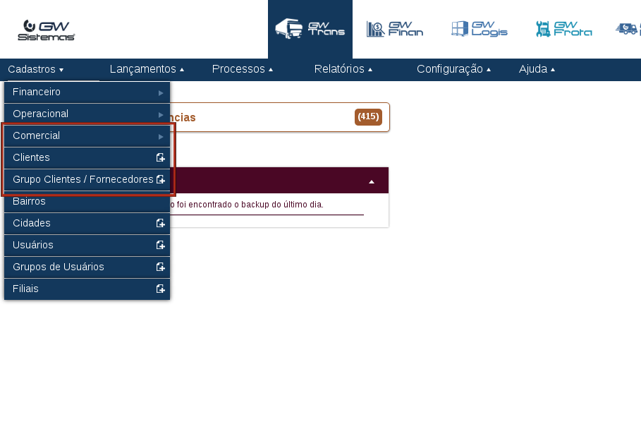
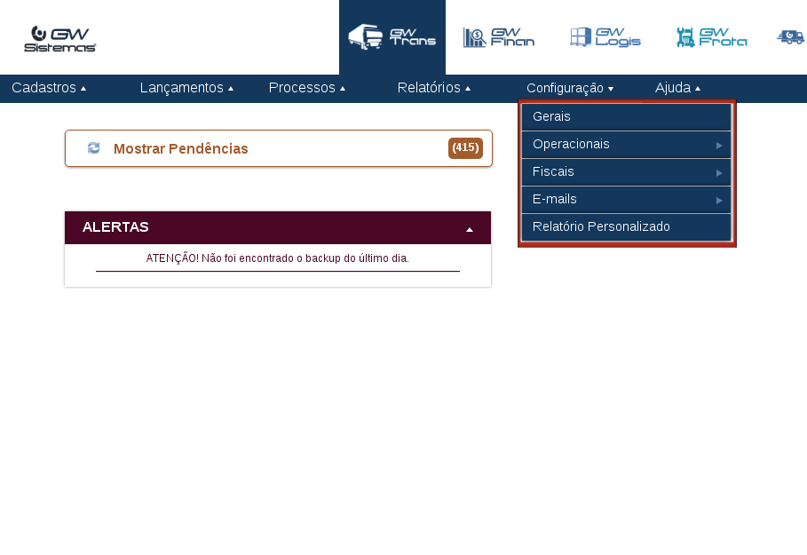

Mudanças no menu de cadastro ( GW Trans )
A partir da versão 15.12.E, o menu principal do GW Trans assumirá algumas mudanças.
1) Menu cadastro.

a) O cadastro de
Clientes
que antes ficava no menu "Cadastros / Operacional / Clientes" agora está no menu "Cadastros / Clientes"
b) O cadastro de
Grupo Clientes / Fornecedores
que antes ficava no menu "Cadastros / Financeiro / Grupo cliente/fornec." agora está no menu "Cadastros / Grupo Clientes/Fornecedores"
c) O cadastro de
Tabelas de preços
que antes ficava no menu "Cadastros / Operacional / Tabelas de preços / Tabelas de preços" agora está no menu "Cadastros / Comercial / Tabelas de preços"
d) O cadastro de
Áreas
que antes ficava no menu "Cadastros / Operacional / Tabelas de preços / Áreas" agora está no menu "Cadastros / Comercial / Áreas"
e) O cadastro de
Tipos de produtos/operações
que antes ficava no menu "Cadastros / Operacional / Tabelas de preços / Tipos de produtos/operações" agora está no menu "Cadastros / Comercial / Tipos de Produções/Operações"
f) O cadastro de
Faixas de peso
que antes ficava no menu "Cadastros / Operacional / Tabelas de preços / Faixas de peso" agora está no menu "Cadastros / Comercial / Faixas de Peso"
g) O cadastro de
Origem de Captação
que antes ficava no menu "Cadastros / Operacional / Origem de Captação" agora está no menu "Cadastros / Comercial / Origem de Captação"
2) Menu Configuração.

a) O menu de
Alterar Configurações
que antes ficava no menu "Configurações / Alterar Configurações" agora está no menu "Configurações / Gerais"
b) O menu de
Impressoras Matriciais
que antes ficava no menu "Configurações / Impressoras Matriciais" agora está no menu "Configurações / Operacionais / Impressoras Matriciais"
c) O menu de
Alterar Alíquota ICMS
que antes ficava no menu "Configurações / Alterar Alíquota ICMS" agora está no menu "Configurações / Fiscais / Alíquotas de ICMS"
d) O menu de
Alterar Pauta Fiscal de ICMS
que antes ficava no menu "Configurações / Alterar Pauta Fiscal de ICMS" agora está no menu "Configurações / Fiscais / Pauta Fiscal de ICMS"
e) O menu de
Taxas de Seguro
que antes ficava no menu "Configurações / Taxas de Seguro" agora está no menu "Configurações / Operacionais / Taxas de Seguro"
f) O menu de
Layout para EDI
que antes ficava no menu "Configurações / Layout para EDI" agora está no menu "Configurações / Operacionais / Layout para EDI"
g) O menu de
Feriados
que antes ficava no menu "Configurações / Feriados" agora está no menu "Configurações / Operacionais / Feriados"